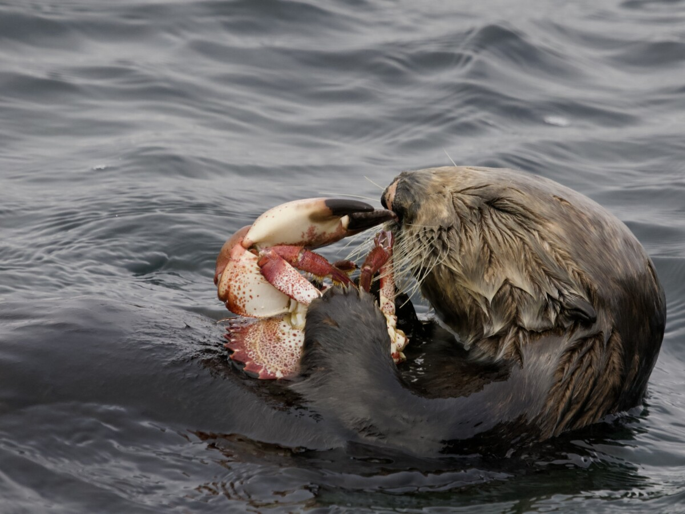

Diet
Otters are carnivorous and have diets primarily made up of fish, but they also consume a variety of other aquatic animals depending on their habitat, species, and food availability!
- 1. River Otters: River otters primarily eat fish, but they also enjoy amphibians, crayfish, small mammals, birds, even aquatic plants! They’re skilled hunters who rely on their sharp eyesight and agile bodies to catch fish in quick bursts when underwater.
- 2. Sea Otters: Sea otters mainly consume marine invertebrates.
- Sea otters are also famous for their use of rocks as tools! They use them to crack open hard-shelled prey, often placing the rock on their chest and striking the shell against it. How smart!
- 3. Giant Otters: Giant otters have a diet rich in fish, especially catfish and piranhas. Small caimans, crustaceans, and even small snakes.
- Social Hunting: These otters sometimes hunt cooperatively in family groups, allowing them to take down larger prey.
- 4. Smooth-Coated Otters: Smooth-coated otters feed mostly on fish but will also consume frogs, insects, and small reptiles.
- Adaptability: They often live near human settlements and may even hunt in rice paddies or irrigation canals
Here we see an otter enjoying a delicious snack!Can you remember what else is included in an otters diet?